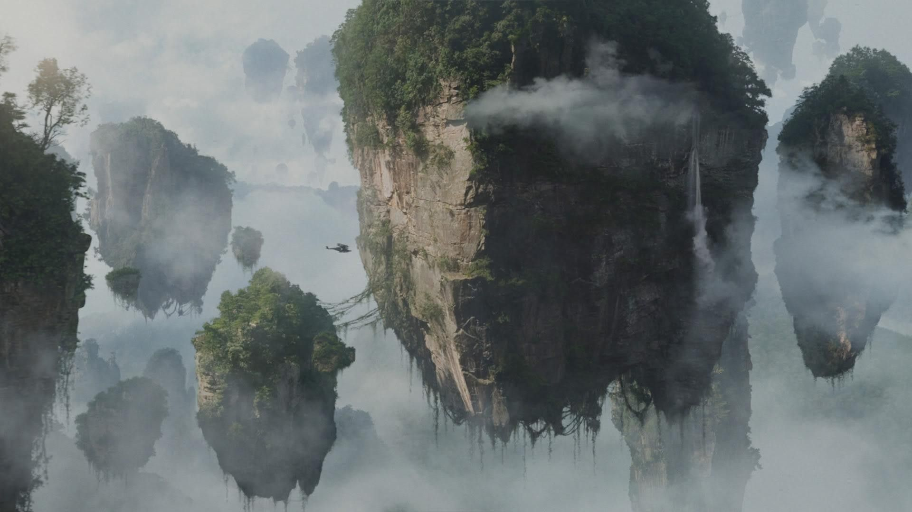
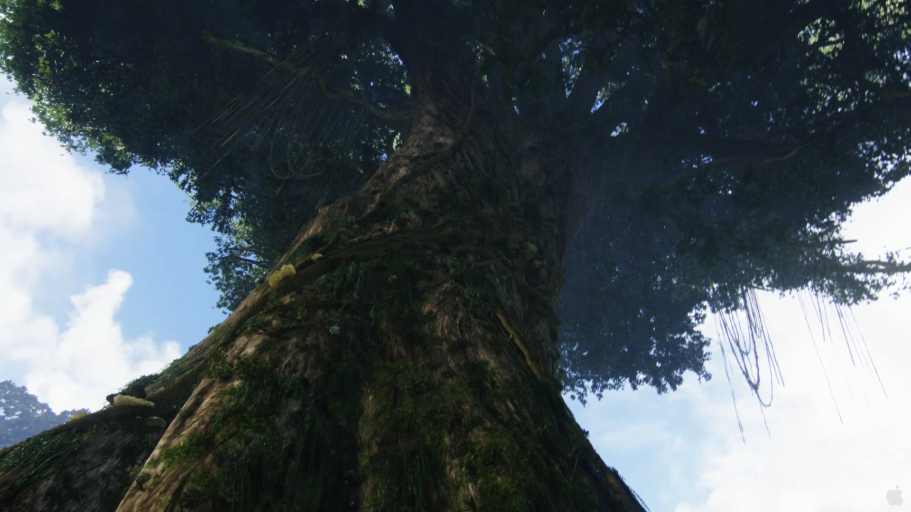
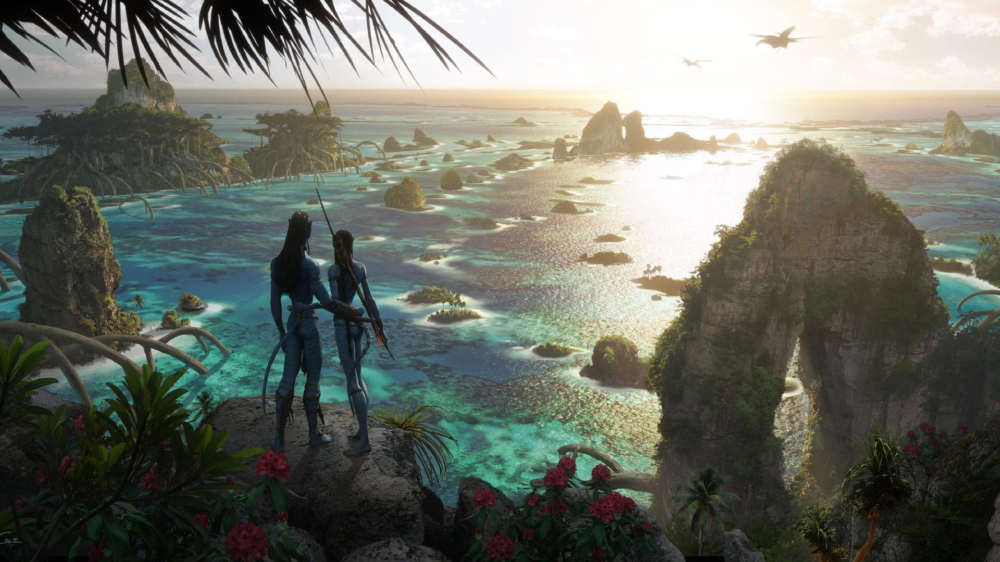

Conheça e se hospede nesses incriveis locais!
Montanhas Aleluia
As montanhas aleluia são ilhas flutuantes presentes em Pandora, voam devido ao minerio Unobtanium, que é magnetico e interage com os vortices magneticos de Pandora
São o lar de alguns clãs Na'vi,e também dos Banshee
Árvore lar
Visite e hospede-se em uma das famosas "árvore lar", encontradas por toda Pandora, são habitadas por muitos clãs Na'vi. Com mais de 100 metros de altura, proporcionam vista para toda a fauna e flora de Pandora.
Praias
Assim como a Terra, Pandora também possui belissimos litorais, desfrute do clima paradisiaco das praias de Pandora
Árvore das Almas

Hospede-se próximo à árvore das almas, uma árvore gigante, dita ser a conexão mais próxima de Eywa em Pandora, lugar de extrema significancia espiritual para os Na'vi
O local tem sido importante para os Na'vi a pelo menos 3.000 anos.